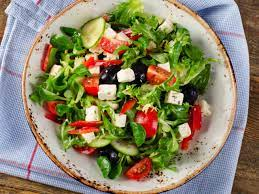

Insalata recipe:
Ingredients:
- cups of mixed salad greens
- 1/2 cup of cherry tomatoes, halved
- 1/2 cup of cucumber, sliced
- 1/4 cup of red onion, thinly sliced
- 1/4 cup of Kalamata olives, pitted
- 1/4 cup of crumbled feta cheese
- 2 tablespoons of extra virgin olive oil
- 1 tablespoon of balsamic vinegar
- Salt and pepper to taste
Instructions
- Start by washing and drying your salad greens
- them in a large bowl.
- Add the cherry tomatoes, cucumber, red onion, and Kalamata olives to the bowl.
- In a small bowl, whisk together the olive oil and balsamic vinegar to make the dressing.
- Pour the dressing over the salad and toss everything together until evenly coated.
- Sprinkle the crumbled feta cheese on top of the salad.
- Season with salt and pepper
- Enjoy!